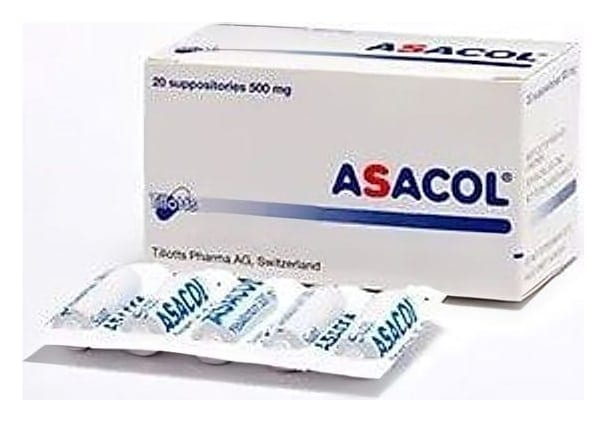

Asacol 500 mg Supozituvar, 20 Adet

Ne için kullanılır
KT · Bölüm 1ASACOL 500 mg mesalazin içerir, açık gri-kahve renkli, torpido şeklinde fitiller (supozituvar) içerir. 20 supozituvarlık ambalajlarda kullanıma sunulmaktadır. ASACOL, “aminosalisilik asit ve benzeri ilaçlar” diye adlandırılan ve “intestinal antienflamatuvar” grubuna dahil bir ilaçtır. Bu ilaçlar kalın bağırsaktaki iltihabı tedavi etmek için kullanılırlar. ASACOL aşağıdaki durumda kullanılır: Rektumda (dışkının atılmadan önce tutulduğu yer) sınırlı ülseratif kolitin (iltihabi kalın bağırsak (kolon) hastalığı) akut (ani başlangıçlı) vakalarının tedavisinde ve hastalığın tekrarının önlenmesinde (koruyucu tedavi) kullanılır.